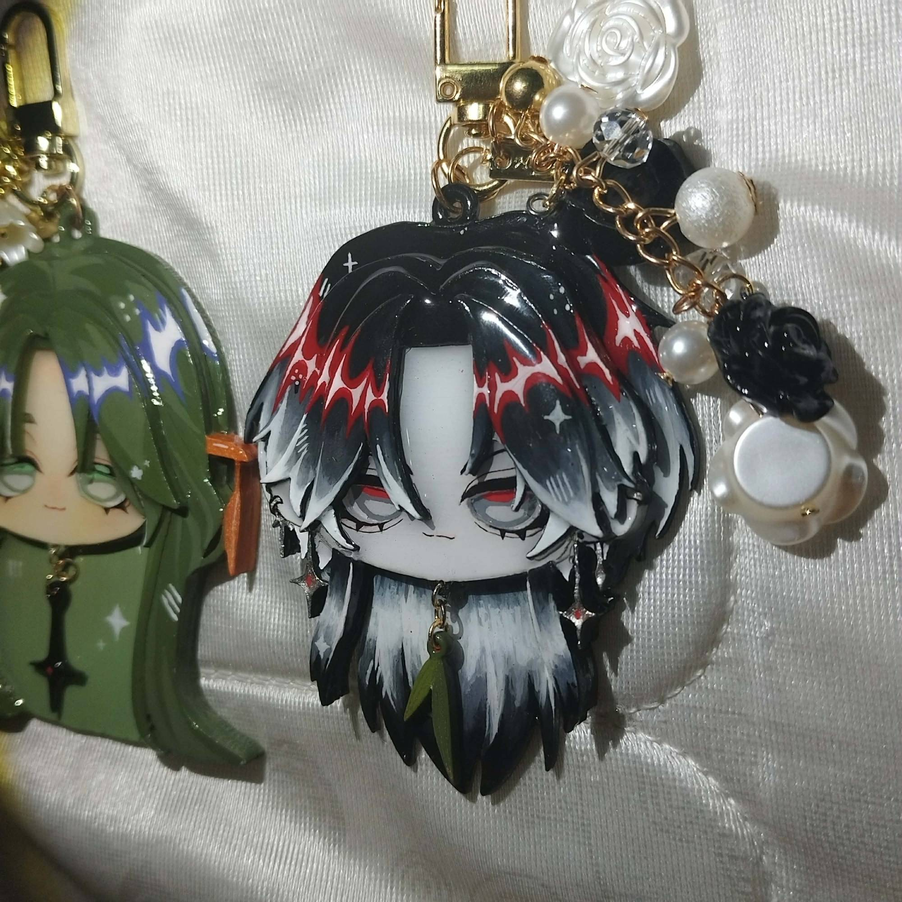
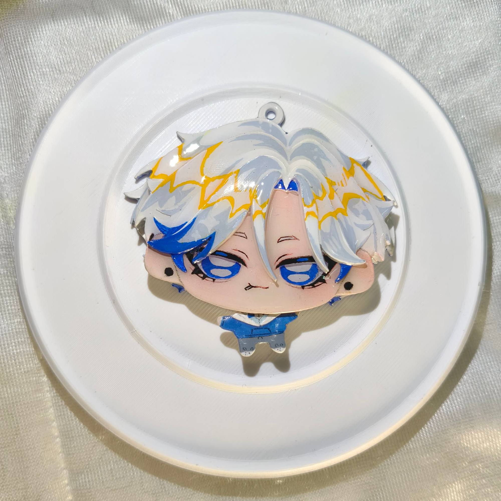
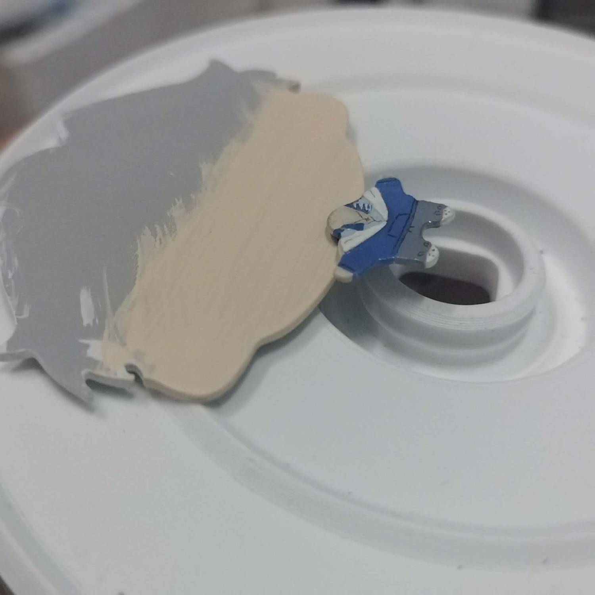
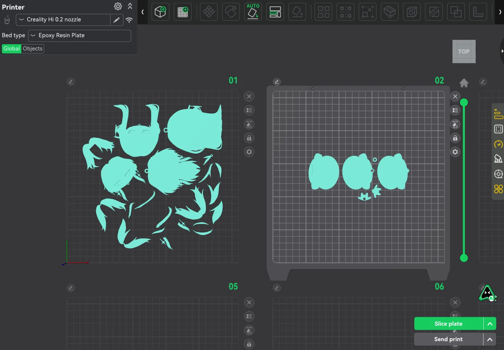
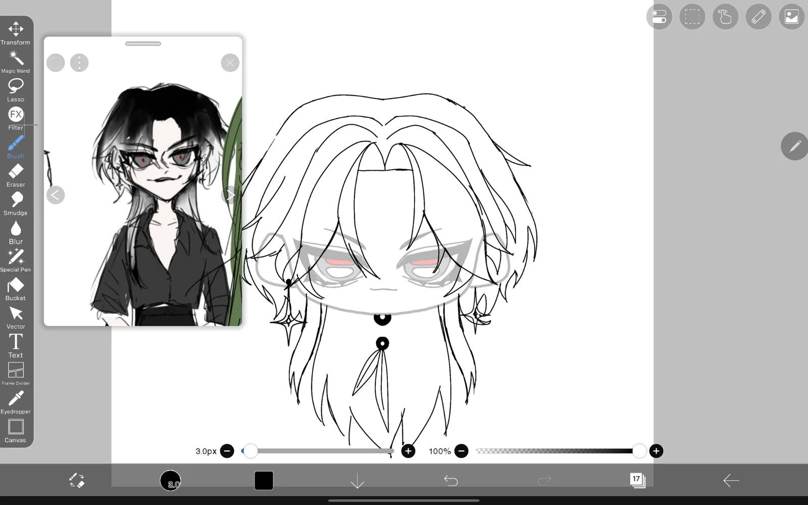
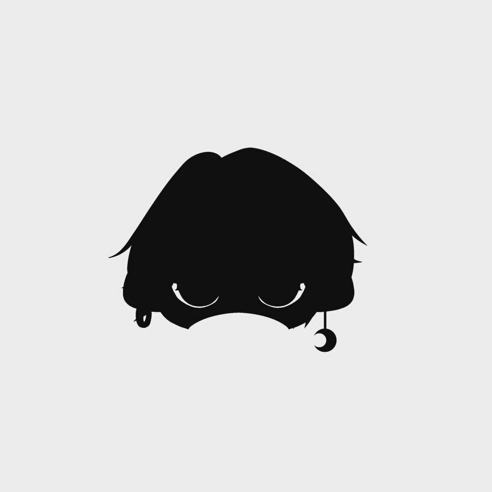
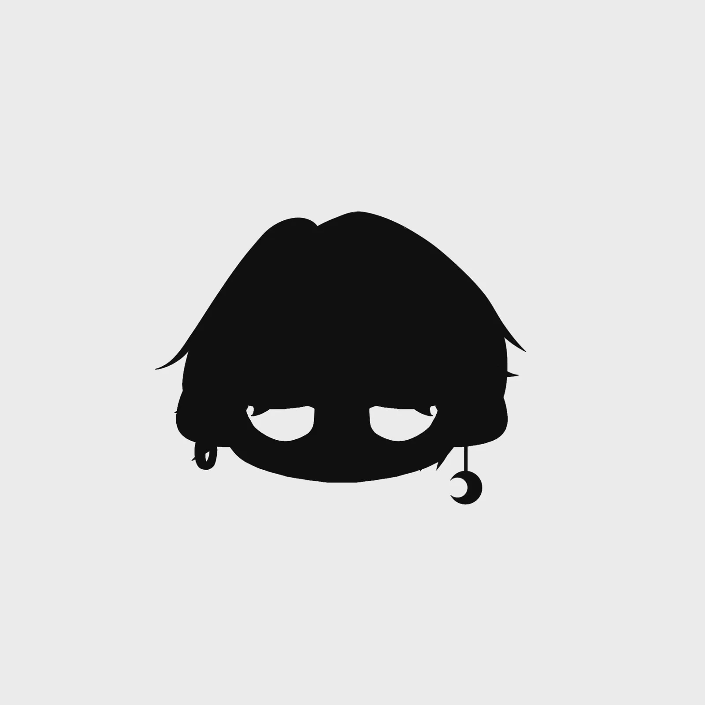
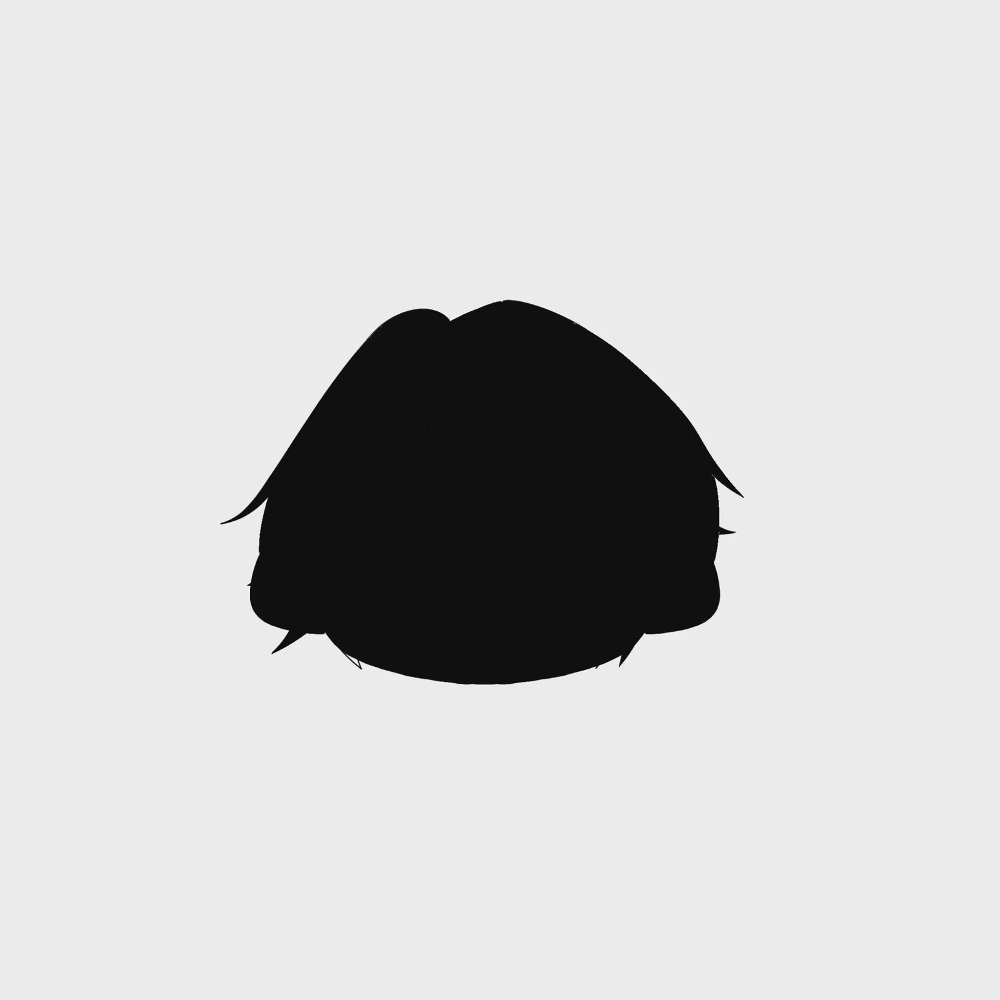
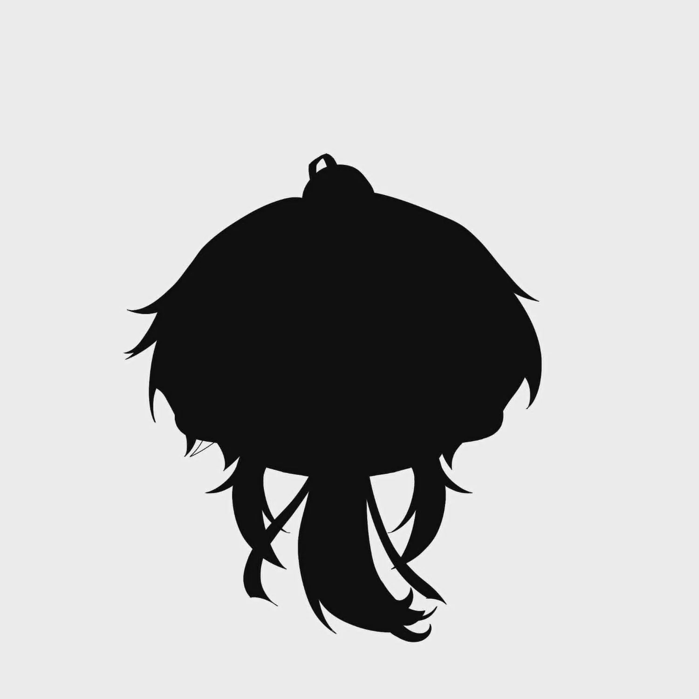

svgtostl เครื่องมือแปลงภาพวาดเป็นงานพิมพ์ 3D
ฉันอยากพิมพ์ชิ้นงานเล็ก ๆ ให้มุมแหลมและเส้นโค้งตรงกับภาพที่วาด svgtostl แปลงภาพวาดถมดำของฉันเป็นชิ้นงานพิมพ์ 3D ใช้ทำพวงกุญแจและแผ่นแพตเทิร์นสำหรับวางทาบบนผ้า วาดตามขอบแล้วตัด
สรุปสั้น ๆ: ฉันกำหนดวิธีแปลงและมาตรฐานคุณภาพ ส่วน AI เขียนโค้ด ตอนนี้ใช้งานอยู่กับพวงกุญแจ งานพิมพ์โลโก้ร้านอาหาร และแผ่นแพตเทิร์นผ้า
- ช่วงเวลา
- 2026
- ทีม / บทบาท
- ทำคนเดียว · ริเริ่มเอง
- เครื่องมือ
- ขั้นตอน ภาพ → เวกเตอร์ → STL · เครื่องพิมพ์ 3D (หัวฉีด 0.2 มม.)
- สถานะ
- ใช้งานอยู่ บันทึกข้อจำกัดไว้แล้ว

โจทย์
ฉันอยากได้ชิ้นงานพิมพ์เล็ก ๆ ที่เก็บรายละเอียดของภาพวาดได้ครบ โดยข้ามการขึ้นโมเดลทีละชิ้นด้วยมือ และไม่ต้องพึ่งโมเดลสามมิติจาก AI ที่เก็บรายละเอียดได้ไม่ครบ
สิ่งที่ฉันตัดสินใจ
- มาตรฐาน: ตรงตามภาพวาด มุมแหลมและเส้นโค้งต้องตรงกับที่วาด ฉันตัดสินคุณภาพจากความเรียบของเส้นโค้ง ปลายแหลม และไม่มีรอยยึกยือ ไม่ได้ดูจากขนาดไฟล์
- เก็บจุดบนเส้นโค้งไว้ครบ ฉันตัดขั้นตอน simplify แบบ Douglas-Peucker (ลดจำนวนจุดบนเส้นโค้ง) ออก เพราะบนวงแหวนรัศมี 90 มม. มันทำให้เกิดด้านตรงยาว 4–6 มม. เส้นโค้งจึงกลายเป็นเหลี่ยมที่ใหญ่พอจะปรากฏในงานพิมพ์ด้วยหัวฉีด 0.2 มม. หากต้องลดจำนวนสามเหลี่ยมในโมเดล ฉันกำหนดให้วางจุดใหม่ห่างเท่า ๆ กันตามแนวเส้นโค้งแทน (resample)
- ปรับการตั้งค่าเทียบกับงานพิมพ์ ฉันบันทึกการตั้งค่าที่พิมพ์ออกมาดี แล้ววัดรูปทรงในไฟล์ผลลัพธ์ของโลโก้ การลดค่าความเบลอ (blur) ทำให้ปลายแหลมคมขึ้นราว 0.2 มม. (0.17–0.23 มม.) ส่วนผลเสียคือเส้นโค้งยึกยือขึ้นเล็กน้อย แต่เล็กกว่าที่หัวฉีด 0.2 มม. จะพิมพ์ออกมาให้เห็นได้
- แยกชิ้นแล้วซ้อน แปลงภาพวาดทีละส่วนแล้วนำชิ้นมาซ้อนกัน ส่วนพวงกุญแจออกแบบให้ใส่ตลับลูกปืน ตัวละครจึงแกว่งได้
ผลลัพธ์
ใช้ทำพวงกุญแจของฉันเอง พิมพ์โลโก้ร้านอาหาร 22 ชิ้น และพิมพ์แผ่นแพตเทิร์นผ้าไว้วางทาบบนผ้า วาดตามขอบแล้วตัด ข้อจำกัดที่ฉันบันทึกเอง คือผิวของไฟล์ STL ยังมีรอยเปิดอยู่บ้าง (เรียกว่ายังไม่ watertight แต่สไลเซอร์ซ่อมให้ได้) และภาพใหญ่ใช้แรมประมาณ 3 GB
แกลเลอรี









ส่วนของฉันกับ AI
ฉัน: วิธีการ มาตรฐานคุณภาพ และทุกการตัดสินใจว่าจะเก็บหรือตัด รวมถึงวาด พิมพ์ และลงสีพวงกุญแจ AI: เขียนโค้ดของเครื่องมือตามสเปกของฉัน